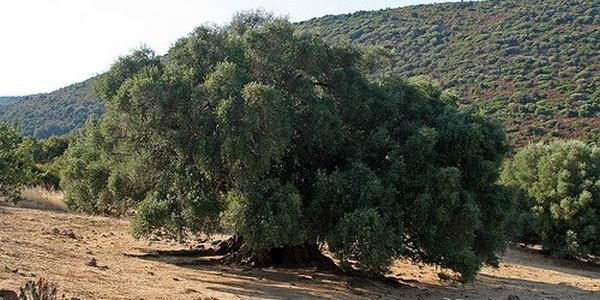
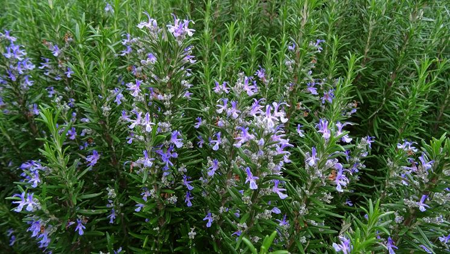
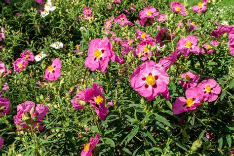
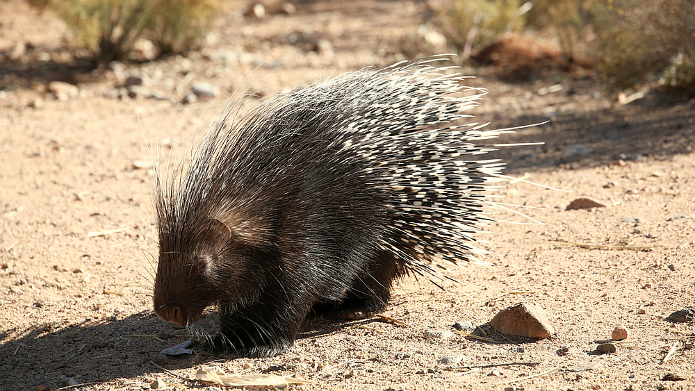
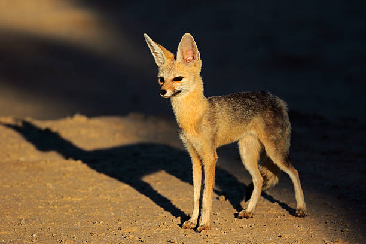
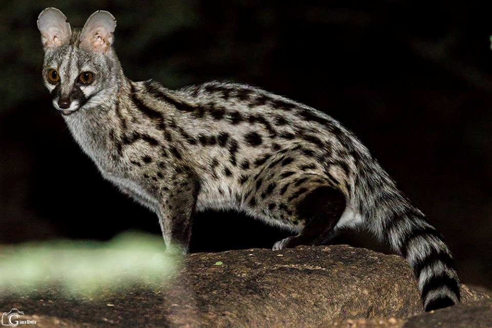

Piante
Olivastro
Nome scientifico: Olea europaea
Famiglia: Oleaceae
Distribuzione: Diffuso principalmente nell'area mediterranea, specialmente in Spagna, Italia, Grecia e Nord Africa.
Caratteristiche: Arbusto o piccolo albero che cresce su terreni ben drenati, resiste alla siccità grazie alle sue radici profonde.
Curiosità: L'ulivo è famoso per i suoi frutti, le olive, che vengono utilizzati per produrre olio d'oliva, un alimento fondamentale nella dieta mediterranea.

Rosmarino
Nome scientifico: Rosmarinus officinalis
Famiglia: Lamiaceae
Distribuzione: Tipica della regione mediterranea, cresce in ambienti soleggiati e ben drenati.
Alimentazione: Utilizzato come spezia in cucina e per preparazioni erboristiche.
Curiosità: Il rosmarino è noto per le sue proprietà antiossidanti, antisettiche e anti-infiammatorie.

Cisto
Nome scientifico: Cistus spp.
Famiglia: Cistaceae
Distribuzione: Cresce nelle regioni calcaree e rocciose del Mediterraneo.
Alimentazione: I fiori sono consumati dalle api per produrre miele.
Curiosità: Il cisto è una pianta che resiste a condizioni di forte siccità e caldo intenso, con fiori che si aprono solo al mattino.

Animali
Istrice Africano
Nome scientifico: Hystrix africaeaustralis
Distribuzione: Diffuso in Africa, particolarmente nelle zone della savana e della macchia mediterranea.
Alimentazione: Erbivoro, si nutre principalmente di radici, tuberi e cortecce.
Curiosità: L'istrice ha spine lunghe e dure che usa come difesa contro i predatori.

Volpe del Capo
Nome scientifico: Vulpes chama
Distribuzione: Endemica della regione del Capo, in Sudafrica, dove vive nelle praterie e nelle zone di macchia.
Alimentazione: Carnivoro, si nutre di piccoli mammiferi, uccelli e insetti.
Curiosità: È una volpe di piccole dimensioni, nota per la sua capacità di adattarsi a vari habitat.

Genetta
Nome scientifico: Genetta genetta
Distribuzione: Diffusa in tutta la regione mediterranea, in particolare in zone boschive e aree aperte.
Alimentazione: Carnivoro, si nutre di piccoli mammiferi, uccelli, rettili e frutti.
Curiosità: La genetta è nota per la sua agilità e per la sua abilità nel cacciare in ambienti variabili, anche scalando gli alberi.

Clima
Clima mediterraneo: estati calde e secche, inverni miti e piovosi. Precipitazioni moderate (400–800 mm/anno). Vegetazione adattata alla siccità.
Esempi
Luoghi
- Regione del Capo (Sudafrica, Provincia del Capo Occidentale)
- Fynbos (bioma unico della zona del Capo)
- Altopiani del Maghreb (Marocco, Algeria, Tunisia)